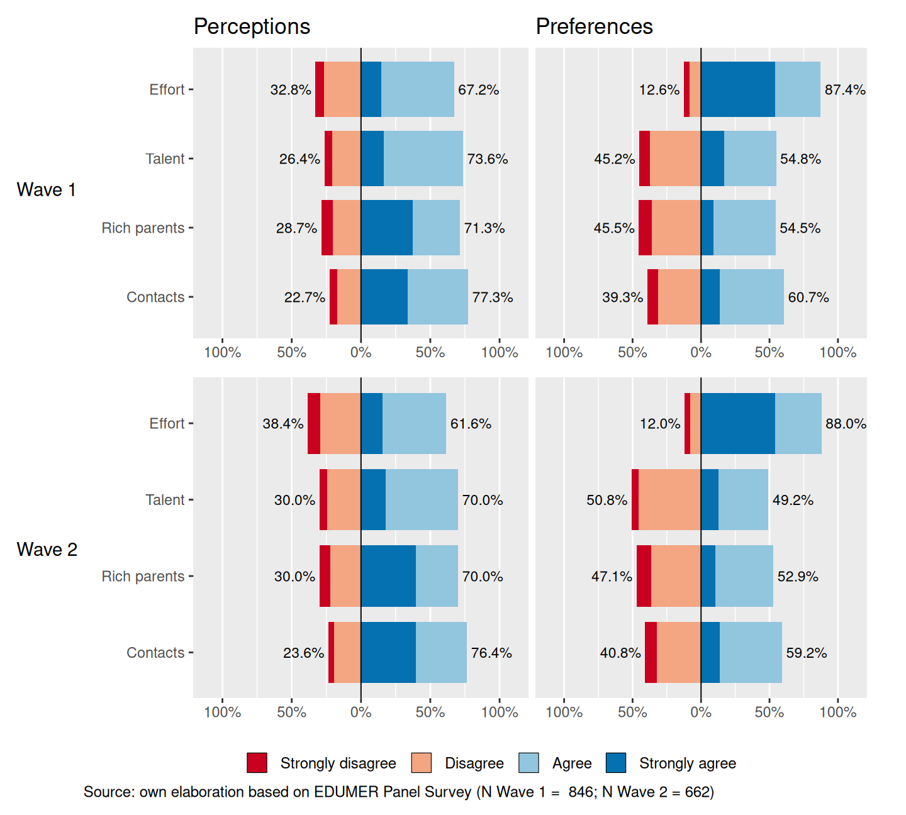
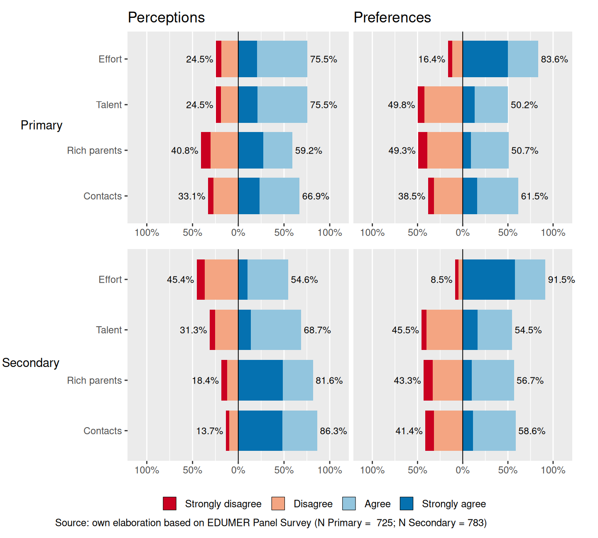
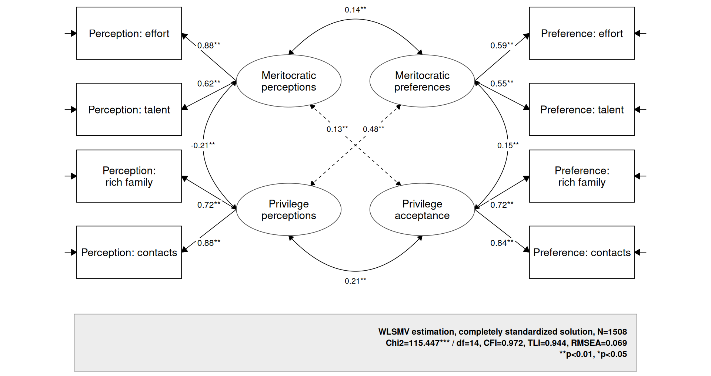

![]()
| Wave | Cohort level | N | Mean | SD | Man | Women | Others |
|---|---|---|---|---|---|---|---|
| Wave 1 | Primary | 406 | 11.85 | 0.56 | 195 | 191 | 20 |
| Secondary | 440 | 14.79 | 0.80 | 226 | 195 | 19 | |
| Total | 846 | 13.38 | 1.63 | 421 | 386 | 39 | |
| Wave 2 | Primary | 319 | 12.83 | 0.55 | 161 | 145 | 13 |
| Secondary | 343 | 15.76 | 0.75 | 177 | 158 | 8 | |
| Total | 662 | 14.35 | 1.61 | 338 | 303 | 21 |
1 Introduction
The way in which children and youths come to understand who succeeds in society and why is a relevant aspect of the socialization process (Mijs, 2016; Resh & Sabbagh, 2014). Schools are important actors in this regard, as they use grading, tracking, and selection to apply meritocratic criteria based primarily on individual talent and effort (Darnon, Wiederkehr, et al., 2018; Traini, 2022). This early exposure to meritocratic principles in the “impressionable years” (Krosnick & Alwin (1989)) is consequential, as it shapes students’ understanding of fairness and incorporates notions of social mobility and social hierarchies. At the same time, schools are environments where students encounter evidence that outcomes are shaped by factors other than meritocratic ones, such as family background, social connections, and structural advantages (Bourdieu & Passeron, 1990; Goudeau & Croizet, 2017; Tang et al., 2025). These background attributes can be considered privileges due to heritage-based advantages over which people have no control, unlike effort. The potential tension between meritocratic ideals and the weight of privilege factors is a complex issue for students to navigate and is central to their understanding of fairness and inequality. Yet, few studies have explored how students conceive meritocracy and to what extent such conceptions challenge the role of privilege in society.
Although meritocracy is often treated as a single dimension, mostly related to individual effort, the literature growingly suggests that it is a multidimensional construct. On the one hand, this refers to the distinction between perceptions of how meritocracy operates in society (“what is”) and preferences about how it should operate (“what ought to be”) (Castillo et al., 2023; Duru-Bellat & Tenret, 2012). On the other hand, meritocratic beliefs can be distinguished from privilege-based beliefs, which emphasize the role of family wealth and social connections in shaping rewards in society (C. Liu & Wang, 2025; Tang et al., 2025). Such beliefs also encompass perceptions of how society functions and preferences about people’s normative inclinations. In this sense, a multidimensional approach incorporates perceptions and preferences about both meritocratic and privilege-based explanations of social outcomes, allowing for a more comprehensive understanding of how individuals interpret social inequalities and fairness.
Previous research has shown that privilege and meritocratic beliefs represent different and not necessarily opposite dimensions, therefore they can coexist in people’s minds (Fan et al., 2026; C. Liu & Wang, 2025; Tang et al., 2025). This means, for instance, that someone could believe that society rewards talent and effort while also acknowledging that family wealth and social connections play (or should play) a role in shaping outcomes. This coexistence of beliefs has important implications for how individuals understand social mobility, fairness, and inequality, as well as for how they evaluate policies aimed at promoting equal opportunities. However, attempts to study these beliefs have been limited by the lack of instruments that capture their multidimensionality and by the absence of longitudinal studies that examine how these beliefs evolve over time. In the present study, we aim to contribute to the field of meritocracy research by applying a multidimensional model to measure meritocratic and privilege beliefs in a sample of Chilean students and by examining the stability and measurement equivalence of these beliefs across school stages and over time. Our main argument is that it is possible to identify and distinguish meritocratic and privilege beliefs even at an early school age, and that these beliefs have a structure similar to that found in a previous study that applied the meritocracy framework in the adult population (Castillo et al., 2023). Furthermore, we argue that these beliefs are not static, but rather evolve over time as students gain more experience and exposure to different social contexts.
This study draws on a two-wave panel dataset of Chilean students in 6th and 9th grade (in wave 1). Studying meritocracy and privilege in the context of Chilean schools provides a unique opportunity to explore how students navigate the tension between meritocratic ideals and the reality of social inequality. Chile’s educational system combines high stratification, market-based competition, and explicit meritocratic discourse in school culture (Castillo et al., 2024; Valenzuela et al., 2013), alongside persistent socioeconomic inequality and a deep marketization of social welfare (Ferre, 2023), features shared by many Latin American countries and increasingly present in European and East Asian systems (Busemeyer, 2014; Gingrich, 2011). This makes Chile a productive case for studying how students internalize, question, or reconcile meritocratic ideals with the reality of privilege, while the dimensional structure and longitudinal patterns identified here are likely to travel to other highly stratified educational contexts.
The research questions guiding this study are as follows:
Do school-aged students distinguish between meritocratic and privilege-based principles, as well as between perceptions (“what is”) and preferences (“what should be”)?
Are the perceptions of privilege detrimental for the endorsement of meritocratic beliefs, or do they coexist in students’ minds?
Are these dimensions stable over time and across school stages?
In the following sections, we review the theoretical background on meritocratic beliefs in school settings, present the methodology and results, and discuss the implications of our findings for understanding how meritocratic and privilege beliefs evolve during adolescence.
2 Theoretical and empirical background
2.2 Conceptualizing and measuring meritocratic and privilege beliefs
The research agenda on meritocratic beliefs has faced challenges in conceptualizing and measuring meritocracy. Some studies have relied on narrow operationalizations that equate meritocracy with the social valuation of effort (Mijs, 2021; Wiederkehr et al., 2015), often reflecting simplified readings of Young’s (1958) formulation (Merit = Effort + Intelligence). For instance, the “Preference for the Merit Principle Scale” (Davey et al., 1999) and the “Belief in School Meritocracy Scale” (Batruch et al., 2022) focus on the perceived importance of effort and ability for success, while Wiederkehr et al. (2015) measure the extent to which respondents believe that hard work is rewarded. These approaches, however, risk conflating meritocratic beliefs with general attitudes toward effort or achievement, potentially overlooking the broader structural and relational dimensions of meritocracy. Other approaches treat meritocratic beliefs as interchangeable with broader constructs such as system justification (Day & Fiske, 2017; Jost et al., 2004), beliefs about social mobility (Deng & Wang, 2025; McCoy & Major, 2007), or generalized support for equal opportunity (Batruch et al., 2022; Darnon, Wiederkehr, et al., 2018). As a result, attempts to measure meritocracy through questionnaire items frequently collapse indicators that tap different dimensions, making it difficult to assess what meritocracy actually means in practice.
A related, more specific limitation to study meritocracy concerns its links with privilege-based factors such as family wealth, social connections, and other structural advantages (Khan & Jerolmack (2013)). As Castillo et al. (2023) notes, much survey research relies on item batteries that ask respondents to rate the importance of effort, talent, family background, networks, or luck for “getting ahead”, and then reduces these into a single score. This becomes especially problematic when researchers construct continuum measures in composite indicators, treating meritocratic and privilege-based explanations as opposite ends of the same scale (e.g., by subtracting “non-merit” from “merit,” as in Reynolds & Xian, 2014). Such operationalizations embed a strong zero-sum assumption, namely that endorsing merit necessarily entails rejecting structural or relational advantages, thereby ruling out, by design, the empirical possibility that both types of beliefs coexist. Recent debates, including the exchange between Mijs (2026) and Wiesner & Sachweh (2026), underscore this point by arguing for measures that capture meritocratic beliefs alongside privilege-based ones, rather than as a residual of the relative importance assigned to structural factors. Complementary empirical work has raised similar concerns: C. Liu & Wang (2025) shows that meritocratic endorsement may remain stable even as recognition of structural constraints increases; Tang et al. (2025) motivates dual consciousness but notes that operationalizations forcing relative trade-offs risk obscuring it; Kwon & Pandian (2024) identify three attitudinal clusters in Europe, instrumental, idealized merit, and ambivalent, showing that support for merit can coexist with recognition of social connections in distinct configurations; and Zhu (2025) argues directly that meritocratic and structural explanations are not zero-sum but often accumulate rather than replace one another. Unidimensional indices, and especially subtraction scores, can therefore manufacture artificial neutral positions and blur substantively distinct belief profiles that carry different educational consequences.
In response to the identified limitations for the comprehensive measurement of merit and privilege beliefs, Castillo et al. (2023) proposed a multidimensional framework that decomposes meritocratic beliefs along two analytically independent axes: preferences versus perceptions, and meritocratic versus privilege-based (originally called “non-meritocratic”) allocation principles. Preferences capture normative ideals about how rewards should be distributed (e.g., whether effort and ability ought to determine life chances); perceptions capture descriptive evaluations of how society actually works (e.g., whether observed inequalities reflect merit-based processes) (Janmaat, 2013). Meritocratic elements (effort, talent) and privilege-based elements (family wealth, networks) are treated as distinct components rather than as opposites. This yields four separate constructs, allowing belief combinations that older measures tend to collapse, such as endorsing meritocracy as an ideal while simultaneously recognizing the weight of family background and connections. The proposal is deliberately minimalist, making it well-suited for large-scale surveys with limited questionnaire space, though this parsimony entails a trade-off: each factor is measured with only two items, which can constrain reliability and content coverage.
Evidence from adult samples using confirmatory factor analysis supports a four-factor structure (perceptions and preferences of both meritocracy and privilege (Castillo et al., 2023). Besides, it shows systematic associations among dimensions: stronger perceived privilege tends to co-occur with stronger meritocratic preferences (Castillo et al., 2023), a pattern that aligns with Zhu’s (2025) notion of dual consciousness, here understood as the simultaneous endorsement of meritocracy as a normative ideal alongside descriptive recognition that rewards are shaped by structural advantage. Regarding school-based research, these measurement challenges have received limited attention. Chauvin et al. (2026) propose a multidimensional measure of school meritocracy that distinguishes between equity and ability dimensions, but their scale applies only to teachers and remains restricted to perceived meritocracy. Castillo et al. (2024) apply the four-factor framework to a sample of Chilean 10th graders and report that students differentiate perceptions from preferences and meritocratic from privilege-based principles; however, that study relies on item-level descriptives and bivariate associations rather than a formal factorial measurement model. Beyond this, to our knowledge no study has examined whether these dimensions are stable across age cohorts or over time, which limits understanding of how meritocratic beliefs develop through schooling and whether observed differences across stages reflect substantive change or measurement non-equivalence.
2.3 This study
Building on the previous evidence, we state the following research hypotheses:
H_1 (Dimensional differentiation): Students’ meritocratic and privilege beliefs can be represented and measured by four distinct factors: perceived meritocracy, perceived privilege, meritocratic preferences, and privilege acceptance.
H_2 (Beliefs compatibility): merit and privilege beliefs are not mutually exclusive, but rather compatible orientations that can coexist within the same individual.
H_3 (Equivalence): The four-factor model is equivalent across the two waves of the panel survey and across two age cohorts (6th and 9th grade in the first wave).
3 Methods
3.1 Participants
This study uses secondary data from the 2023 and 2024 waves of the Panel Survey on Education and Meritocracy (EDUMER), which examines school-age students’ beliefs, attitudes, and behaviors regarding meritocracy, inequality, and citizenship. The questionnaire was administered to sixth-grade and first-year secondary students in nine schools in Chile’s Metropolitan and Valparaíso regions. Although the sample was non-probabilistic and lacked quota controls, a minimum target of 900 students was set to ensure adequate statistical power. After data processing and listwise deletion, the analytical sample included 846 students in Wave 1 (386 girls, 421 boys, 39 identifying as other; M_{age} = 13.4, SD_{age} = 1.6) and 662 in Wave 2 (303 girls, 338 boys, 21 identifying as other; M_{age} = 14.4, SD_{age} = 1.6), yielding a retention rate of 78.3% (attrition = 21.7%). The main sources of attrition were school transfers between academic years and high absenteeism in several schools.
To distinguish students’ academic level across waves for conditional and multi-group invariance analyses, we created a cohort indicator capturing whether the respondent belonged to the primary (sixth grade) or secondary (first-year secondary) cohort at the time of each survey wave. Descriptive statistics by cohort and wave are reported in Table 1.
3.2 Procedure
Data were collected by a professional research firm using a Computer-Assisted Web Interviewing (CAWI) approach, based on online questionnaires. All participants received informed consent, which was reviewed and approved by a parent or legal guardian. To enable longitudinal linkage while protecting confidentiality, the survey firm generated anonymous unique identifiers for each student, and no directly identifying information was included in the analytic files. Following the principles of open science, the hypotheses were pre-registered on the Open Science Framework (OSF) prior to data collection, and the analytic code and data are publicly available on a public Github repository .
3.3 Measures
3.3.1 Perceptions and preferences of meritocracy
Meritocratic and privilege-based perceptions and preferences were measured using the same items proposed in the original scale (Castillo et al., 2023). Each of the four dimensions of the scale is measured by two items. The dimensions are:
Meritocratic perceptions: the extent to which effort and ability are rewarded in Chile,
Privilege perceptions: the extent to which success is perceived as linked to connections and family wealth,
Meritocratic preferences: agreement with that those who work harder or are more talented should be better rewarded,
Privilege acceptance: agreement that it is acceptable for individuals with better connections or wealthy parents to achieve greater success (see Table 2).
Each item is rated on a four-point scale ranging from “strongly disagree” (1) to “strongly agree” (4), therefore higher scores indicate stronger endorsement of the corresponding perception or preference.
| Components | Dimensions | Item (English) | Item original (Spanish) |
|---|---|---|---|
| Perception | Meritocratic | In Chile people are rewarded for their efforts | En Chile las personas son recompensadas por sus esfuerzos |
| In Chile people are rewarded for their intelligence and ability | En Chile las personas son recompensadas por su inteligencia y habilidad | ||
| Privilege | In Chile those with wealthy parents do much better in life | En Chile a quienes tienen padres ricos les va mucho mejor en la vida | |
| In Chile those with good contacts do much better in life | En Chile a quienes tienen buenos contactos les va mejor en la vida | ||
| Preference | Meritocratic | Those who work harder should reap greater rewards than those who work less hard | Quienes más se esfuerzan deberían obtener mayores recompensas que quienes se esfuerzan menos |
| Those with more talent should reap greater rewards than those with less talent | Quienes poseen más talento deberían obtener mayores recompensas que quienes poseen menos talento | ||
| Privilege | It is good that those who have rich parents do better in life | Está bien que quienes tengan padres ricos les vaya mejor en la vida | |
| It is good that those who have good contacts do better in life | Está bien que quienes tengan buenos contactos les vaya mejor en la vida |
3.4 Analytical strategy
3.4.1 Measurement model and estimation
To address the multidimensional nature of meritocracy conceptual framework, we estimated a Confirmatory Factor Analysis (CFA) based on a measurement model with four latent factors. The estimation is performed using Diagonally Weighted Least Squares with robust correction (WLSMV) which is suitable for ordinal items. (Kline, 2023). Model fit was assessed following the guidelines of Brown (2015), using several indices: the Comparative Fit Index (CFI) and the Tucker-Lewis Index (TLI), with acceptable values above 0.95; the Root Mean Square Error of Approximation (RMSEA), with values below 0.06 indicating good fit; and the Chi-square statistic (acceptable fit indicated by p > 0.05 and a Chi-square/df ratio < 3).
3.4.2 Measurement equivalence across time and groups
A key contribution of this study is its assessment of measurement stability through factorial invariance testing (Putnick & Bornstein, 2016). The objective of applying factorial invariance in this case is twofold: first, as a robust test of the measurement model, and second, to ensure that the latent constructs allow for valid comparisons across time and groups. In this sense, the logic of factorial invariance is that the same latent construct should be measured in the same way across time and groups, so that any observed differences in the latent construct can be attributed to true differences rather than measurement artifacts. In this study, we tested for factorial invariance across two panel waves (longitudinal invariance) and across school levels (comparing primary vs. secondary students cohorts). The logic of factorial invariance testing is to compare a series of nested models with increasing constraints, starting from a configural model (same factor structure across time or groups) to more restrictive models that constrain factor loadings, thresholds/intercepts, and residual variances .
We followed recent recommendations for ordered categorical indicators, specifically the longitudinal approach of Y. Liu et al. (2017) and the cross-group procedure as suggested by Svetina et al. (2020). In addition to the chi-square difference test, we assessed invariance using changes in approximate fit indices. Following Chen (2007), we treated \DeltaCFI as the primary criterion and \DeltaRMSEA as supplementary, indicating noninvariance when \DeltaCFI \geq −0.010 and \DeltaRMSEA \geq 0.015.
All analyses were performed using the lavaan package in R version 4.5.2. The hypotheses of this research were pre-registered on the Open Science Framework (OSF).
4 Results
This section is organized into three parts, each one referred to corresponding three research questions and hypotheses. First, we present descriptive statistics and visualizations of the survey items measuring meritocratic perceptions and preferences, as well as perceived privilege and its acceptance. Second, we report the results of the confirmatory factor analysis (CFA) conducted to evaluate the proposed four-factor structure of meritocratic perceptions, meritocratic preferences, perceived privilege, and privilege acceptance. Based on in these results we analyze the associations between the different dimensions of meritocracy and privilege, which is at the core of our investigation. Finally, we present the results of multigroup analyses to assess measurement invariance across cohorts and waves.
4.1 Descriptives
Figure 1 displays the response distributions for the meritocracy and privilege items by each survey wave, distinguishing perceptions from preferences. A clear and stable gap emerges between how students perceive social rewards to operate and how they think they should operate. In the perception items, agreement is consistently high for contacts, parental wealth, and talent, whereas effort displays the lowest perception. In the preference items, by contrast, effort is overwhelmingly endorsed as the legitimate basis for rewards, exceeding by far its perceived role in practice. Noticeably, in terms of preferences, is the talent item the one showing the lower frequency, being the use of contacts and family resources more preferred than this meritocratic stance. Roughly, more that half of respondents in both waves express an acceptance of the influence of rich parents and contacts, revealing that such privilege criteria are not uniformly seen as illegitimate way to get ahead.

Regarding the primary and secondary education cohorts, some contrasts emerge as seen in Figure 2. In terms of perception, the meritocratic items (effort and talent) are the ones with the highest agreement in the youngest cohort and the lowest in the oldest one. At the same time, the privilege perceptual items (contacts and family wealth) are the ones with the lowest agreement in the youngest cohort and the highest in the oldest one. This pattern is consistent with evidence on a “disillusionment” with meritocracy as students progress through the educational system (Fan et al., 2026; Tang et al., 2025). In terms of preferences, the pattern is more stable across cohorts, with effort being the most endorsed legitimate basis for reward, while talent, family wealth, and especially contacts remain more ambivalent. As in the previous descriprive analysis by wave, contacts are more often accepted than rejected in both cohorts. Overall, the cohort comparison reveals a widening gap between an effort-centered meritocratic ideal and the perceived importance of privilege advantages in practice.

4.2 Multidimensional measurement of meritocracy and privilege
The eitgh items described in the previous section are conceptually organized into four latent dimensions: meritocratic perceptions, meritocratic preferences, perceived privilege, and privilege acceptance. Previous research in adult population has shown that these dimensions are empirically distinguishable and can be measured with a four-factor structure (Castillo et al., 2023). In this study, we extend this line of research to the adolescent population, examining whether the same four-factor structure holds in our sample of students from primary and secondary education cohorts (H_1).
Figure 3 presents a diagram of the general measurement model. The hypothesized four latent dimensions are represented by circles in the middle, each correspondig to two observed indicators (rectangles) that are expected to load on the corresponding latent factor. The arrows indicate the direction of the hypothesized relationships, with factor loadings representing the strength of the association between each indicator and its latent construct. The model also allows for correlations among the four latent factors, reflecting the potential interrelationships between meritocratic perceptions, meritocratic preferences, perceived privilege, and privilege acceptance. The model shows a reasonable –though not fully satisfactory– fit to the data (CFI = 0.97; TLI = 0.94; RMSEA = 0.07). Although the CFI falls within commonly accepted ranges, the RMSEA and TLI remain below conventional thresholds, indicating that fit is acceptable in some respects but not uniformly strong across indices. As we will see later on, part of the misfit relates to some differences across cohorts, which are explored in the subsequent multigroup analyses.

All standardized factor loadings are statistically significant and generally moderate to strong, though their magnitude varies across dimensions. For meritocratic perceptions, the effort item shows a particularly strong loading (\beta = 0.88) and talent a moderately strong loading (\beta = 0.62). Meritocratic preferences exhibit more even, but somewhat weaker, loadings for effort (\beta = 0.59) and talent (\beta = 0.55). For perceived privilege, both indicators load strongly, especially contacts (\beta = 0.88), followed by coming from a rich family (\beta = 0.72). Privilege acceptance also shows strong and relatively balanced loadings, with contacts (\beta = 0.84) and rich family (\beta = 0.72), indicating that both indicators are similarly representative of this latent dimension. In general, the factor loadings suggest that the observed indicators are reasonably good measures of their respective latent constructs, with some variation in strength across dimensions.
The analysis of latent correlations gives us important insights into the relationships among the four dimensions (H_2). As stated before, allowing these for dimensions to correlate pertmit us to open the black-box of meritocracy and privilege beliefs, which both in the common sense as well as in the literature are often treated as the oposite poles of a single continuum. The results show that the four dimensions are indeed interrelated, but not perfectly aligned, indicating that students’ beliefs about meritocracy and privilege are complex and multifaceted. To begin with, all the correlations but one are actually positive. The only negative correlation is between meritocratic perceptions and privilege perceptions, which is consistent with the idea that perceiving society as more meritocratic is associated with a lower recognition of the role of privilege (and vice versa). Some positive associations also show a more intuitive pattern, such as the positive correlation between meritocratic perceptions and meritocratic preferences, suggesting that students who perceive society as more meritocratic also tend to endorse meritocratic ideals. The strongest association is between privilege perceptions and meritocratic preferences, indicating that students who recognize the role of privilege in society are also more likely to endorse meritocratic ideals. However, other correlations suggest relationships that are less straightforward, as for instance the positive correlation between meritocratic preferences and privilege acceptance, which may indicate that despite perceiving meritocracy, students may still accept the legitimacy of privilege advantages. Something similar occurs with positive association between meritocratic and privilege preferences, which may suggest that students who endorse meritocratic ideals may also recognize the legitimacy of privilege advantages. Although these last correlations are modest in size, they highlight the complexity of students’ beliefs about meritocracy and privilege, suggesting that these dimensions are not simply opposites but rather can coexist in students minds without necessarily undermining one another.
4.3 Stability of meritocracy and privilege beliefs
This section objective is twofold. On the one hand, we aim at testing the validity of the measurement model through an assessment of it stability over time and cohorts. For this, we perform an assessment of model equivalence or invariance, which is a form of robustness check that allows us to determine whether the latent constructs are being measured in the same way across different groups or time points. Such evidence is crucial for ensuring that any observed differences in the latent constructs are not due to measurement artifacts but rather reflect valid differences(Putnick & Bornstein, 2016) . The test of the equivalence of parameters in a confirmatory factor analysis follows a hierarchical approach, starting with configural invariance (same factor structure across groups or time points), then weak invariance (equal factor loadings), strong invariance (equal intercepts), and finally strict invariance (equal residual variances). Each level of invariance provides increasingly stringent evidence that the measurement model is stable across groups or time points. In this study, we first test for longitudinal invariance across the two waves of data collection, and then we test for cohort invariance between primary and secondary education students.
4.3.1 Longitudinal invariance
Table 3 reports the results of the longitudinal invariance tests. The logic of longitudinal invariance is to apply senquential constraints to the model parameters across time, in order to check to what extent the parameters are invariant across time. This is basically takign the two measurement points as two comparing groups, but in this case, the groups are the same individuals measured at two different time points, which is incorporated in the model by correlating the unique item variances. The table shows the fit indices for the configural, weak (metric), strong (scalar), and strict invariance models, along with the chi-square difference tests comparing each nested model. Overall, the scale achieved the strongest level of invariance (strict invariance) across the two waves. The strict model showed good fit, \chi^2(84) = 130.17, CFI = 0.991, RMSEA = 0.031 (90% CI: 0.020–0.040). Moreover, compared with the strong (scalar) model, the deterioration in fit was negligible: \Delta \chi^2(4) = 1.635, \DeltaCFI = 0.000, and \DeltaRMSEA = -0.002. These differences fall well within commonly used cutoffs for invariance evaluation (Chen, 2007), indicating that constraining residual variances in addition to loadings and thresholds/intercepts is tenable. Substantively, this implies that the item–factor relations are stable over time (metric invariance) and that, for a given level of the latent trait, respondents are expected to endorse the same response categories across waves (scalar invariance), supporting the comparability of scores and latent parameters within students over time.
| Model | χ2 (df) | CFI | RMSEA (90% CI) | Δχ2 (Δdf) | ΔCFI | ΔRMSEA | Decision |
|---|---|---|---|---|---|---|---|
| Configural | 117.7 (68) | 0.991 | 0.035 (0.024-0.046) | 0 (0) | 0 | 0.000 | Reference |
| Weak | 122.51 (72) | 0.990 | 0.034 (0.024-0.045) | 4.809 (4) | 0 | -0.001 | Accept |
| Strong | 128.53 (80) | 0.991 | 0.032 (0.021-0.042) | 6.02 (8) | 0 | -0.002 | Accept |
| Strict | 130.17 (84) | 0.991 | 0.031 (0.02-0.04) | 1.635 (4) | 0 | -0.002 | Accept |
As an additional diagnostic, we used univariate score tests to identify potential sources of localized misfit at each step of the invariance hierarchy. The tests revealed no meaningful violations of the imposed equality constraints, suggesting that model fit was not driven by a small subset of parameters. Global score tests and the smallest p-values at each step are reported in the Supplementary Material. Based on these results, we conclude that the measurement model is stable over time, and that the latent constructs are being measured in the same way across the two waves of data collection.
4.4 Cohorts comparability
Table 4 reports the results of the cross-cohort (multigroup) invariance tests comparing primary and secondary students. As in the longitudinal case, the sequence starts from a configural model, which imposes the same four-factor structure in both cohorts but lets all parameters vary freely, and then adds equality constraints on factor loadings (weak invariance) and on loadings and item thresholds (strong invariance). Since the indicators are ordinal, thresholds play the role that intercepts play for continuous items. The configural model shows a good fit, \chi^2(28) = 47.65, CFI = 0.991, RMSEA = 0.041, indicating that the same four-factor structure holds in both cohorts. However, the scale did not achieve weak invariance: constraining the factor loadings to be equal significantly worsened fit, \Delta \chi^2(4) = 20.77, p < .001. This means that the relationship between the latent factors and their indicators differs between primary and secondary students, which could be due to developmental differences or differences in how the items are interpreted across cohorts. An additional analysis following the alternative sequence proposed by Svetina et al. (2020), which tests the equivalence of thresholds before loadings, led to the same conclusion: invariance between primary and secondary students was not achieved either (see supplementary materials).
The changes in CFI (\DeltaCFI = −0.009) and RMSEA (\DeltaRMSEA = 0.013) are close to, though still within, the conventional cutoffs (Chen, 2007), so at the global level the evidence against loading invariance is not overwhelming. Adding the threshold constraints worsened fit further, \Delta \chi^2(8) = 35.89, p < .001, with \DeltaCFI = −0.011, which exceeds the recommended cutoff.
| Model | χ2 (df) | CFI | RMSEA (90% CI) | Δχ2 (Δdf) | ΔCFI | ΔRMSEA | Decision |
|---|---|---|---|---|---|---|---|
| Full invariance sequence | |||||||
| Configural | 47.65 (28) | 0.991 | 0.041 (0.019-0.06) | Reference | |||
| Loadings | 71.3 (32) | 0.981 | 0.054 (0.037-0.071) | 20.77 (4) *** | -0.009 | 0.013 | Reject |
| Loadings + Thresholds | 103.09 (40) | 0.970 | 0.061 (0.047-0.076) | 35.89 (8) *** | -0.011 | 0.007 | Reject |
| Partial invariance (loading of preferences for talent freed) | |||||||
| Loadings (partial) | 48.48 (31) | 0.992 | 0.037 (0.014-0.056) | 1.82 (3) | 0.001 | -0.004 | Accept |
| Loadings (partial) + Thresholds | 84.91 (39) | 0.978 | 0.053 (0.037-0.068) | 42.72 (8) *** | -0.014 | 0.016 | Reject |
Note. Scaled WLSMV statistics. Each model is compared with the preceding one in its block (partial loadings: vs. configural).
To identify the source of non-invariance, we inspected univariate score tests for each equality constraint on the loadings. Unlike in the longitudinal case, the misfit was concentrated in a single parameter: the loading of the talent preference item on the meritocratic preferences factor (\chi^2(1) = 16.87, Holm-adjusted p < .001). The remaining loadings were fully consistent with invariance (all p > .36). In line with this, freeing that single loading is enough to restore weak invariance, with a fit indistinguishable from the configural model, \Delta \chi^2(3) = 1.82, p = .61, CFI = 0.992, RMSEA = 0.037.
The cohort-specific loadings show what this means substantively, as revealed when observing the factor models separately for each cohort (see supplementary materialss). In primary school the meritocratic preferences factor is defined mainly by the preference for talent as a criterion of reward (standardized loading = 0.87) and much less by the preference for effort (0.45). In secondary school the pattern reverses: effort becomes the core of the factor (0.83) whereas talent is only weakly related to it (0.37). Thus, younger students seem to treat effort and talent as two sides of the same meritocratic ideal, whereas older students distinguish them, with effort remaining the central meritocratic criterion and talent becoming a more separate consideration, plausibly as inherited or unearned advantages become more salient with age. This means that the meritocratic preferences factor does not have exactly the same meaning in both cohorts, and comparisons of its levels across cohorts should be interpreted with caution. In contrast, the loadings for the perceptions of meritocracy and for both privilege factors are equivalent across cohorts.
Even after freeing this loading, adding the threshold constraints significantly worsened fit (\Delta \chi^2(8) = 42.72, p < .001; \DeltaCFI = −0.014), so strong invariance was not achieved. In this case, the source is different: univariate score tests point to the thresholds of the perceived effort item, for which all three constraints are violated (\chi^2(1) between 11.6 and 11.9; Holm-adjusted p between .015 and .017), whereas no threshold of any other item shows meaningful misfit (adjusted p > .99). Substantively, students in the two cohorts use the response categories of this item differently for a given level of perceived meritocracy, which is consistent with the descriptive differences reported above (see Figure 2): secondary students are more likely to endorse the lowest response category when judging whether effort is rewarded in society, suggesting that they apply a more critical standard. Taken together, only partial weak invariance holds, and comparisons of latent means across cohorts, in particular for meritocratic perceptions, should be interpreted with caution.
5 Discussion
Meritocarcy and privilege are often treated as opposite poles of a single continuum, but the present study shows that they are better understood as distinct dimensions that coexist in students’ beliefs, similar to what has been found in adult population (Castillo et al., 2023). Our first hypothesis proposed that students’ meritocratic beliefs would be best represented by four distinct dimensions: perceived meritocracy, perceived privilege, meritocratic preferences, and privilege acceptance. Such framework is consistent with the distinction between descriptive and normative beliefs, and with the idea that meritocratic and privilege-based principles are not mutually exclusive. Such proposal attempts to offer a comprehensive framework for understanding how students perceive and evaluate fairness in society, and how they relate to the structural conditions that shape their opportunities. The assessment of the conceptual model of meritocracy and privilege beliefs initially supports this expectation expressed in H_1: the four latent constructs are identifiable in the school-aged population, with satisfactory model fit and strong factor loadings in the two waves analyzed. Consistent with previous evidence (Castillo et al., 2023), these results indicate that even at an early stage of school socialization, students are able to distinguish between meritocratic and privilege-based perceptions and preferences. This four-factor structure also resonates with qualitative evidence from Chilean schools, where students across socioeconomic groups simultaneously invoke meritocratic ideals and recognize structural advantage (Neut Aguayo et al., 2025), and where merit is often defined by attitude and visible effort rather than by academic outcomes (Moyano Dávila et al., 2025). This last finding is relevant for interpreting the privilege acceptance dimension: in contexts where merit is primarily understood as behavioral disposition, accepting that privilege-based advantages lead to better outcomes may not be experienced as a contradiction but as a separate normative judgment about a different domain. This suggests that the coexistence of these orientations reflects how students actually navigate competing narratives about fairness and reward, rather than an artifact of survey design.
The empirical separability of these dimensions has substantive implications for how meritocratic beliefs are understood and measured (Kwon & Pandian, 2024; Mijs, 2026; Zhu, 2025), as proposed in H_2. First, perceived privilege is positively associated with stronger meritocratic preferences, which suggests a normative-reactive response to perceived unfairness (Castillo et al., 2023). Second, meritocratic perceptions are positively correlated with preferences for privilege. Prior research has linked meritocratic perceptions to the self-interest hypothesis, which holds that those who occupy higher social positions are more likely to adopt a meritocratic worldview. Extending this framework to incorporate privilege reveals a more complex picture: perceiving society as meritocratic does not merely reflect a particular reading of how society works, but may also conceal support for privilege. In other words, the coexistence of these factors suggests that the justification of inequality is embedded in the meritocratic narrative itself, such that the defense of privilege emerges alongside the belief that the world is meritocratic. This results are consistent with Zhu’s (2025) argument that meritocratic and structural explanations accumulate rather than displace one another, and with accounts in which merit endorsement may remain stable as recognition of structural constraints increases (C. Liu & Wang, 2025; Tang et al., 2025). It is also worth noting how this finding relates to typological approaches: Kwon & Pandian (2024) document three distinct attitudinal clusters in Europe, showing that coexistence takes different forms across individuals.
These results also have implications for how the existing literature on school meritocracy should be interpreted. A substantial body of research has linked stronger meritocratic beliefs among students to inequality legitimation, weaker support for redistribution, and greater acceptance of unequal access to educational resources (Batruch et al., 2022; Castillo et al., 2024; Wiederkehr et al., 2015), while among teachers and parents, similar beliefs predict competitive classroom practices and lower demand for equity-oriented policies (Darnon et al., 2023). A particularly relevant finding is that perceived, but not preferred, school meritocracy predicts lower support for egalitarian and inclusive educational interventions (Darnon, Smeding, et al., 2018), and that belief in school meritocracy is associated with greater acceptance of social-class achievement gaps (Darnon, Wiederkehr, et al., 2018). However, most of this research relies on unidimensional or undifferentiated measures, which means it cannot establish whether these effects are specific to particular dimensions or reflect a more general meritocratic orientation. Our findings suggest that these documented effects are likely dimension-specific: perceived meritocracy is not equivalent to preferred meritocracy, and neither carries the same consequences as perceived privilege or privilege acceptance. Chauvin et al. (2026) similarly highlight multidimensionality by distinguishing ability and equity, but their measure remains confined to perceived meritocracy and applies only to teachers. What the present study adds is a validated four-factor structure applicable to students, which provides the measurement foundation needed to examine whether distinct dimensions of meritocratic belief carry distinct consequences for the educational environment, from students’ sense of justice in school to civic attitudes and the broader climate of fairness, a question the existing literature has not yet been able to address with adequate precision.
Our third hypothesis concerned the robustness and equivalence of the meritocracy and privilege beliefs model over time and across cohorts (invariance). Strict longitudinal invariance supports the second hypothesis: the scale measures the same constructs across waves, so changes over time reflect real within-student change rather than shifts in how items are interpreted (Y. Liu et al., 2017; Putnick & Bornstein, 2016; Van De Schoot et al., 2015). It also suggests that meritocratic belief structures are fairly stable over one year in early-to-mid adolescence, and it gives later studies a sound measurement basis. We also note that the link between perceived privilege and meritocratic preferences may depend on how fair the school system is experienced to be (C. Liu & Wang, 2025). However, invariance across educational levels was not supported. The non-invariance is concentrated in preferred meritocracy, in how students read whether effort is rewarded. We do not consider this finding reducible to a mere measurement failure. Rather, we interpret it as students attaching different meanings to “effort is rewarded”, linked to adolescents’ more sophisticated reasoning about fairness and to their growing exposure to school sorting such as grades, tracking and peer comparison; a progressive “reality shock” (Allen, 2016; Henry & Saul, 2006; Resh & Sabbagh, 2014; Tang et al., 2025). This could be related to Chile’s stratified system, where the gap between meritocratic discourse and structural reality can be experienced as a moral grievance (Neut Aguayo et al., 2025), but further research in different context could help shading light into this issue. Next studies should use stage-sensitive items and partial-invariance approaches instead of assuming that meritocracy scales travel across school levels (Putnick & Bornstein, 2016; Van De Schoot et al., 2012), and practitioners should calibrate efforts to build a shared sense of fairness to students’ developmental stage.
6 Conclusions
Schools socialize students into beliefs about meritocracy, promoting effort and talent as the legitimate basis of reward while simultaneously exposing students to the weight of family resources and social connections in shaping outcomes (Goudeau & Croizet, 2017; Resh & Sabbagh, 2014; Traini, 2022). Students navigate this tension by holding both orientations at once, endorsing merit as an ideal while recognizing that privilege structures actual outcomes, a configuration the literature describes as dual consciousness (Kluegel & Smith, 1987; C. Liu & Wang, 2025; Tang et al., 2025). Capturing this complexity requires studies and instruments that distinguish how students perceive meritocracy to work from how they prefer it should work, and that treat merit and privilege as potentially coexisting rather than mutually exclusive, a standard most available measures do not meet. Extending Castillo et al.’s (2023) multidimensional framework to adolescents, this study tested whether students distinguish merit from privilege and perceptions (“what is”) from preferences (“what should be”), using panel survey data from two Chilean cohorts (8th and 10th graders) across two waves (2023-2024), and whether these dimensions are stable over time and comparable across school stages. The contribution is a modest but foundational one: to establish whether meritocratic beliefs can be measured reliably and equivalently in school-aged populations, as a precondition for studying their developmental trajectory and educational consequences in future studies.
The results support a four-dimensional structure of merit and privilege beliefs: perceived meritocracy, perceived privilege, meritocratic preferences, and privilege acceptance. It shows that Chilean adolescents differentiate perceptions from preferences and meritocratic from privilege-based principles, and that merit endorsement can coexist with recognition of structural advantage. Consistent with this, perceived privilege is positively associated with stronger meritocratic preferences, suggesting that recognizing unfair advantages can intensify demands that rewards should follow merit, a normative-reactive pattern that unidimensional instruments would obscure (Castillo et al., 2023). The measurement structure is longitudinally invariant within students, providing a reliable basis for interpreting over-time change as substantive rather than artifactual. At the same time, cross-cohort non-invariance is itself a substantive finding rather than merely a technical caveat: comparisons across educational stages require caution because the preference for that “effort is rewarded” does not carry the same meaning for primary and secondary students. This measurement heterogeneity is theoretically consistent with developmental accounts in which cumulative schooling experience progressively reshapes how students interpret meritocratic signals (Allen, 2016; Tang et al., 2025), and it calls for stage-sensitive item formulations in future work rather than treating the current scale as directly comparable across levels.
More broadly, these findings sharpen the way the literature should interpret the effects of meritocracy in educational contexts. When measures conflate perceptions with preferences or collapse merit and privilege into a single continuum, they blur substantively different belief profiles and yield ambiguous conclusions about whether meritocracy is high, low, or declining (Reynolds & Xian, 2014; Zhu, 2025). Part of what is often interpreted as a change in belief in meritocracy may instead reflect shifting recognition of structural constraints rather than a straightforward decline in merit endorsement, an interpretation consistent with recent education-focused accounts of dual consciousness (C. Liu & Wang, 2025; Tang et al., 2025). While typological approaches have documented the coexistence of apparently contrasting beliefs in educational settings (Kwon & Pandian, 2024; Zhu, 2025), the present study shows how that coexistence can be represented within a coherent measurement model that supports longitudinal inference. The combination of strict longitudinal invariance and cross-level non-invariance establishes a key boundary condition: within-student comparisons over time are warranted, whereas comparisons across school stages must account for the shifting meaning of perceived meritocracy.
Although this study draws on a single country, its contributions carry implications beyond the Chilean case. Three findings are likely to travel across educational systems. First, the conceptual distinction between perceived and preferred meritocracy, and between meritocratic and privilege-based principles, reflects general cognitive and normative capacities that develop during adolescence regardless of national context; further studies should hel state whether the four-factor structure is able to replicate in other societies. Second, the coexistence of merit endorsement and recognition of privilege, the core pattern underlying dual consciousness, has been documented in China (C. Liu & Wang, 2025; Tang et al., 2025), the United States and Finland (Zhu, 2025), and Europe (Kwon & Pandian, 2024), suggesting it is not a Chilean peculiarity. Third, the logic of longitudinal invariance testing as a prerequisite for developmental inference is methodologically general and applies to any panel study of meritocratic beliefs. By contrast, the specific pattern of cross-cohort non-invariance, concentrated in preferred effort, may be more system-dependent: it likely reflects the particular intensity and timing of school-based sorting in Chile’s tracked and marketized system. Future research in countries with different tracking regimes and stratification profiles will help clarify which aspects of measurement equivalence are universal and which are conditioned by institutional features.
The findings carry distinct implications for three audiences. For researchers, the results underscore the importance of treating meritocratic beliefs as multidimensional and of routinely testing measurement invariance before making developmental or cross-group comparisons. This matters particularly for equity-oriented research: if measurement models are not equivalent across socioeconomic or generational groups, observed differences in meritocracy may partly reflect differential item interpretation rather than genuine attitudinal divergence, misattributing to individuals what may be a structural artifact of how inequality shapes the meaning of merit. For practitioners, including teachers, school counselors, and those who design civic and citizenship education, the coexistence of merit endorsement and recognition of privilege suggests that students are not passive recipients of meritocratic ideals but actively navigate tensions between what schools tell them about fairness and what they observe in practice. This has direct relevance for civic education and for school climate: rather than simply reinforcing effort-based narratives or, conversely, dismantling them, educators can engage students’ existing dual awareness as a starting point for discussing how merit and privilege coexist, helping cultivate a more critical and grounded sense of justice. Because the meanings students attach to effort and reward shift across school stages, such efforts need to be calibrated to students’ developmental moment rather than applied uniformly. For policymakers concerned with equity, the finding that perceived privilege intensifies meritocratic preferences carries a specific message: students who recognize that rewards do not follow merit do not abandon the ideal of fairness but demand it more strongly. Educational systems that maintain a strong meritocratic discourse while visibly reproducing inequality risk widening the gap between what they promise and what students experience, with potential consequences for students’ sense of justice in school, their trust in educational institutions, and their broader civic engagement.
This study has limitations that point to clear directions for future research. The tested measurement scale is deliberately minimalist, with two items per factor, which constrains content coverage and reliability and means that claims about subtle within-dimension differences should be treated with caution. With only two waves and two school levels, additional waves and broader age coverage are needed to better trace developmental trajectories and identify when shifts in meaning in perceived meritocracy occur. Cross-level non-invariance calls for differential item functioning analyses and stage-sensitive item formulations to support comparability across educational stages. Most importantly, future research should examine how perceptions and preferences of meritocratic and privilege-based principles relate to the outcomes for which they are most likely to matter in school: students’ sense of justice and fairness, civic attitudes and engagement, school climate, and wellbeing, alongside academic motivation. By providing an empirically supported and longitudinally invariant multidimensional measure for adolescents, this study offers a more reliable, if still provisional, foundation for studying how school-based meritocratic socialization shapes students’ interpretations of fairness and inequality.
7 References
Allen, K. (2016). Top girls navigating austere times: Interrogating youth transitions since the “crisis.” Journal of Youth Studies, 19(6), 805–820. https://doi.org/10.1080/13676261.2015.1112885
Batruch, A., Jetten, J., Van de Werfhorst, H., Darnon, C., & Butera, F. (2022). Belief in school meritocracy and the legitimization of social and income inequality. Social Psychological and Personality Science, 194855062211110. https://doi.org/10.1177/19485506221111017
Bell, D. (1972). On equality: I. Meritocracy and equality. The Public Interest, 29, 29–68.
Bourdieu, P., & Passeron, J. C. (1990). Reproduction in education, society and culture (Second Edition). Sage Publications Ltd.
Brown, T. A. (2015). Confirmatory factor analysis for applied research (Second edition). New York London: The Guilford Press.
Busemeyer, M. (2014). Skills and inequality: Partisan politics and the political economy of education reforms in western welfare states. Cambridge University Press.
Castillo, J. C., Iturra, J., Maldonado, L., Atria, J., & Meneses, F. (2023). A multidimensional approach for measuring meritocratic beliefs: Advantages, limitations and alternatives to the ISSP social inequality survey. International Journal of Sociology, 53(6), 448–472. https://doi.org/10.1080/00207659.2023.2274712
Castillo, J. C., Laffert, A., Carrasco, K., & Iturra-Sanhueza, J. (2025). Perceptions of inequality and meritocracy: Their interplay in shaping preferences for market justice in chile (2016–2023). Frontiers in Sociology, 10, 1634219. https://doi.org/10.3389/fsoc.2025.1634219
Castillo, J. C., Torres, A., Atria, J., & Maldonado, L. (2019). Meritocracia y desigualdad económica: Percepciones, preferencias e implicancias. Revista Internacional de Sociología, 77(1), 117. https://doi.org/10.3989/ris.2019.77.1.17.114
Chauvin, B., Rauscher, C., Saidah, B., & Louvet, E. (2026). School meritocracy: A multidimensional construct? Evidence from the development of a school meritocracy scale by exploratory and confirmatory bifactor modeling. Current Psychology, 45(5), 519. https://doi.org/10.1007/s12144-026-09134-1
Chen, F. F. (2007). Sensitivity of goodness of fit indexes to lack of measurement invariance. Structural Equation Modeling: A Multidisciplinary Journal, 14(3), 464–504. https://doi.org/10.1080/10705510701301834
Darnon, C., Jury, M., Goudeau, S., & Portex, M. (2023). Competitive and cooperative practices in education: How teachers’ beliefs in school meritocracy are related to their daily practices with students. Social Psychology of Education, 26(6), 1789–1805. https://doi.org/10.1007/s11218-023-09824-9
Darnon, C., Smeding, A., & Redersdorff, S. (2018). Belief in school meritocracy as an ideological barrier to the promotion of equality. European Journal of Social Psychology, 48(4), 523–534. https://doi.org/10.1002/ejsp.2347
Darnon, C., Wiederkehr, V., Dompnier, B., & Martinot, D. (2018). “Where there is a will, there is a way”: Belief in school meritocracy and the social-class achievement gap. British Journal of Social Psychology, 57(1), 250–262. https://doi.org/10.1111/bjso.12214
Davey, L. M., Bobocel, D. R., Son Hing, L. S., & Zanna, M. P. (1999). Preference for the merit principle scale: An individual difference measure of distributive justice preferences. Social Justice Research, 12(3), 223–240. https://doi.org/10.1023/A:1022148418210
Day, M. V., & Fiske, S. T. (2017). Movin’ on up? How perceptions of social mobility affect our willingness to defend the system. Social Psychological and Personality Science, 8(3), 267–274. https://doi.org/10.1177/1948550616678454
Deng, Y., & Wang, F. (2025). It’s my fault, i should try harder! The narratives of self‐made upward mobility sustain belief in meritocracy in low social mobility context. British Journal of Psychology, bjop.70015. https://doi.org/10.1111/bjop.70015
Duru-Bellat, M., & Tenret, E. (2012). Who’s for meritocracy? Individual and contextual variations in the faith. Comparative Education Review, 56(2), 223–247. https://doi.org/10.1086/661290
Fan, S., John, O. P., & De Fruyt, F. (2026). Disillusionment with meritocracy during the transition to adulthood: Longitudinal change in belief systems and depression in china. Psychological Science, 09567976261479675. https://doi.org/10.1177/09567976261479675
Ferre, J. C. (2023). Welfare regimes in twenty-first-century latin america. Journal of International and Comparative Social Policy, 39(2), 101–127. https://doi.org/10.1017/ics.2023.16
García-Sierra, A. (2023). The dark side of meritocratic beliefs: Is believing in meritocracy detrimental to individuals from low socioeconomic backgrounds? Social Justice Research, 36(4), 385–409. https://doi.org/10.1007/s11211-023-00413-x
Gingrich, J. R. (2011). Making markets in the welfare state: The politics of varying market reforms (1st ed.). Cambridge University Press. https://doi.org/10.1017/CBO9780511791529
Henry, P. J., & Saul, A. (2006). The development of system justification in the developing world. Social Justice Research, 19(3), 365–378. https://doi.org/10.1007/s11211-006-0012-x
Heuer, J.-O., Lux, T., Mau, S., & Zimmermann, K. (2020). Legitimizing inequality: The moral repertoires of meritocracy in four countries. Comparative Sociology, 19(4-5), 542–584. https://doi.org/10.1163/15691330-BJA10017
Imhoff, D., & Brussino, S. (2025). Nociones infantiles sobre desigualdad social: atravesamientos ideológicos y procesos de socialización política. Revista Latinoamericana de Ciencias Sociales, Niñez y Juventud, 13(2). https://doi.org/10.11600/1692715x.1329071114
Janmaat, J. G. (2013). Subjective inequality: A review of international comparative studies on people’s views about inequality. European Journal of Sociology, 54(3), 357–389. https://doi.org/10.1017/S0003975613000209
Jost, J. T., Banaji, M. R., & Nosek, B. A. (2004). A decade of system justification theory: Accumulated evidence of conscious and unconscious bolstering of the status quo. Political Psychology, 25(6), 881–919. https://doi.org/10.1111/j.1467-9221.2004.00402.x
Khan, S., & Jerolmack, C. (2013). Saying meritocracy and doing privilege. The Sociological Quarterly, 54(1), 9–19. https://doi.org/10.1111/tsq.12008
Kline, R. B. (2023). Principles and practice of structural equation modeling. Guilford Publications.
Kluegel, J. R., & Smith, E. R. (1987). Beliefs about inequality: Americans’ views of what is and what ought to be. New York: Routledge.
Krosnick, J. A., & Alwin, D. F. (1989). Aging and susceptibility to attitude change. Journal of Personality and Social Psychology, 57(3), 416–425. https://doi.org/10.1037/0022-3514.57.3.416
Kwon, R., & Pandian, R. K. (2024). Multidimensionality in merit attitudes: The role of hard work, skills, and social connections in europe. Social Science Research, 122, 103056. https://doi.org/10.1016/j.ssresearch.2024.103056
Lampert, K. (2013). Meritocratic education and social worthlessness. London: Palgrave Macmillan UK. https://doi.org/10.1057/9781137324894
Liu, C., & Wang, J. (2025). Does education legitimise inequality? Comparative analysis of income inequality, education, and meritocratic beliefs. The British Journal of Sociology, 1468–4446.70029. https://doi.org/10.1111/1468-4446.70029
Liu, Y., Millsap, R. E., West, S. G., Tein, J.-Y., Tanaka, R., & Grimm, K. J. (2017). Testing measurement invariance in longitudinal data with ordered-categorical measures. Psychological Methods, 22(3), 486–506. https://doi.org/10.1037/met0000075
McCoy, S. K., & Major, B. (2007). Priming meritocracy and the psychological justification of inequality. Journal of Experimental Social Psychology, 43(3), 341–351. https://doi.org/10.1016/j.jesp.2006.04.009
Mijs, J. (2016). The unfulfillable promise of meritocracy: Three lessons and their implications for justice in education. Social Justice Research, 29(1), 14–34. https://doi.org/10.1007/s11211-014-0228-0
Mijs, J. (2019). The paradox of inequality: Income inequality and belief in meritocracy go hand in hand. Socio-Economic Review, 19(1), 7–35. https://doi.org/10.1093/ser/mwy051
Mijs, J. (2021). The paradox of inequality: Income inequality and belief in meritocracy go hand in hand. Socio-Economic Review, 19(1), 7–35. https://doi.org/10.1093/ser/mwy051
Mijs, J. (2026). Visualizing belief in merit and privilege, 1930 to 2020: rejoinder. Socius: Sociological Research for a Dynamic World, 12, 23780231261426413. https://doi.org/10.1177/23780231261426413
Moyano Dávila, C., Alarcón-Arcos, S., Angelcos, N., Castillo, J. C., & Salgado, M. (2025). Merit as an attitude: Chilean school communities’ repertoires in chile and the perception of the “good student” in a post-pandemic scenario. Social Justice Research, 38(3), 264–289. https://doi.org/10.1007/s11211-025-00456-2
Neut Aguayo, P., Rivera-Vargas, P., & Miño Puigcercós, R. (2025). Neoliberalism and school inequality in the chilean education system: An analysis from the voices of lower-class, middle-class, and upper-class students. International Studies in Sociology of Education, 1–16. https://doi.org/10.1080/09620214.2025.2558938
Putnick, D. L., & Bornstein, M. H. (2016). Measurement invariance conventions and reporting: The state of the art and future directions for psychological research. Developmental Review, 41, 71–90. https://doi.org/10.1016/j.dr.2016.06.004
Resh, N., & Sabbagh, C. (2014). Sense of justice in school and civic attitudes. Social Psychology of Education, 17(1), 51–72. https://doi.org/10.1007/s11218-013-9240-8
Reynolds, J., & Xian, H. (2014). Perceptions of meritocracy in the land of opportunity. Research in Social Stratification and Mobility, 36, 121–137. https://doi.org/10.1016/j.rssm.2014.03.001
Sandel, M. J. (2020). The tyranny of merit: What’s become of the common good? (First edition). New York: Farrar, Straus and Giroux.
Sigelman, C. K. (2013). Age differences in perceptions of rich and poor people: Is it skill or luck? Social Development, 22(1), 1–18. https://doi.org/10.1111/sode.12000
Svetina, D., Rutkowski, L., & Rutkowski, D. (2020). Multiple-group invariance with categorical outcomes using updated guidelines: An illustration using m plus and the lavaan/semTools packages. Structural Equation Modeling: A Multidisciplinary Journal, 27(1), 111–130. https://doi.org/10.1080/10705511.2019.1602776
Tang, M., Li, A., & Wu, X. (2025). Meritocratic myth in mind? Socioeconomic backgrounds and shifting beliefs about meritocracy among college students in china. Sociology of Education, 00380407251360432. https://doi.org/10.1177/00380407251360432
Tejero-Peregrina, L., Willis, G., Sánchez-Rodríguez, Á., & Rodríguez-Bailón, R. (2025). From perceived economic inequality to support for redistribution: The role of meritocracy perception. International Review of Social Psychology, 38(1), 4. https://doi.org/10.5334/irsp.1013
Traini, C. (2022). The stratification of education systems and social background inequality of educational opportunity. International Journal of Comparative Sociology, 63(1-2), 10–29. https://doi.org/10.1177/00207152211033015
Valenzuela, J. P., Bellei, C., & Ríos, D. D. L. (2013). Socioeconomic school segregation in a market-oriented educational system. The case of chile. Journal of Education Policy, 29(2), 217–241. https://doi.org/10.1080/02680939.2013.806995
Van De Schoot, R., Lugtig, P., & Hox, J. (2012). A checklist for testing measurement invariance. European Journal of Developmental Psychology, 9(4), 486–492. https://doi.org/10.1080/17405629.2012.686740
Van De Schoot, R., Schmidt, P., De Beuckelaer, A., Lek, K., & Zondervan-Zwijnenburg, M. (2015). Editorial: Measurement invariance. Frontiers in Psychology, 6. https://doi.org/10.3389/fpsyg.2015.01064
Van De Werfhorst, H. G. (2024). Is meritocracy not so bad after all? Educational expansion and intergenerational mobility in 40 countries. American Sociological Review, 89(6), 1181–1213. https://doi.org/10.1177/00031224241292352
Wiederkehr, V., Bonnot, V., Krauth-Gruber, S., & Darnon, C. (2015). Belief in school meritocracy as a system-justifying tool for low status students. Frontiers in Psychology, 6. Retrieved from https://www.frontiersin.org/articles/10.3389/fpsyg.2015.01053
Wiesner, T., & Sachweh, P. (2026). Effort versus advantage: Visualizing (relative) belief in meritocracy, 1930 to 2022—a comment on mijs (2018), 12. https://doi.org/10.1177/23780231261425841
Young, M. (1958). The rise of the meritocracy. New Brunswick, N.J., U.S.A: Transaction Publishers.
Zhu, L. (2025). Meritocratic beliefs in the united states, finland, and china: A multidimensional approach using latent class analysis. The British Journal of Sociology, 76(1), 153–172. https://doi.org/10.1111/1468-4446.13152